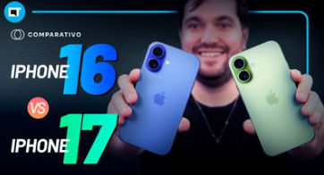

iPhone 17 melhora câmera, tela e consumo de energia em comparação ao iPhone 16
Por André Leonardo | 14/10/2025 às 18:00 editado por ByteNews
A evolução do iPhone 16 para o iPhone 17 marca um avanço na estratégia da Apple, centrado em desempenho e novas tecnologias de tela.
O modelo anterior já trazia recursos de inteligência artificial no chip A18 Bionic e melhorias no sistema de câmeras. Agora, o novo iPhone aposta no chip A19 Pro, mais eficiente e com menor consumo de energia.
O design recebeu ajustes sutis: o corpo ficou mais leve e resistente com novas ligas de titânio, e as bordas da tela foram reduzidas para ampliar a área útil.
O grande salto entre as gerações está no processamento e na experiência visual. O iPhone 17 estreia uma versão aprimorada da tecnologia ProMotion, que ajusta dinamicamente a taxa de atualização para equilibrar fluidez e economia de energia. O brilho máximo também aumentou, favorecendo o uso em ambientes externos.
Na fotografia, os novos sensores e algoritmos garantem imagens mais nítidas e precisas, especialmente em baixa luz, reforçando o foco da Apple em qualidade e eficiência.
Gabriel Rimi analisa o iPhone 17, aborda seus pontos positivos comparado às versões mais caras e mostra pontos de evolução em relação ao iPhone 16.
Seção de comentários
Fale Conosco pelo Whatsapp
 conversar
conversar